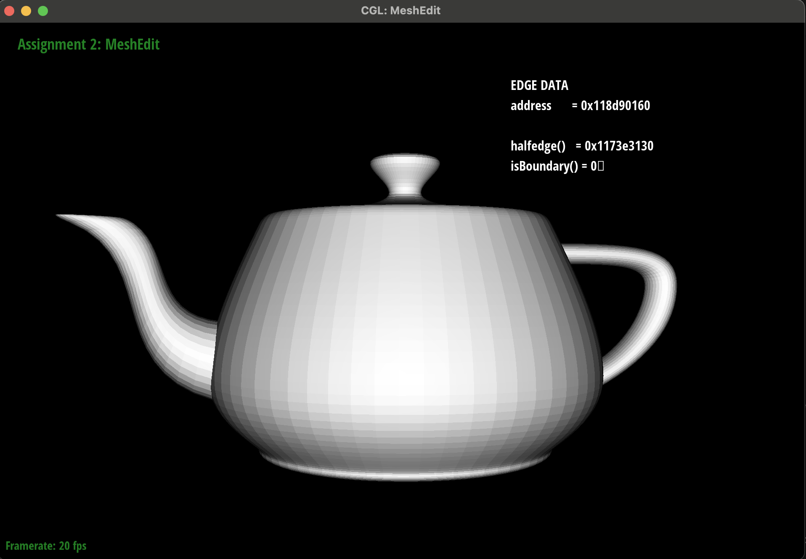

De Casteljau's algorithm is a recursive algorithm meant to evaluate Bezier curves. It takes as input an initial set of control points and a parameter t that decides how to interpolate along the control points. In the first iteration, the algorithm calculates intermediate points along the edges between the control points (distance based on t), then connects these 2 intermediate points. We use the newly created polygon as the next points to recurse on. This process repeats until the algorithm has reached a single point or if the curve is smooth.
The de Casteljau algorithm extends to Bezier surfaces very easily because we just need to deal with an extra dimension (Bezier surfaces are defined by 2D control points array). Given an nxn grid of control points, we first ran the de Casteljau algorithm row-wise, in order to create a 1D N-length array of control points Pi. Finally, we ran the de Casteljau algorithm one more time (visualized vertically) on these Pi values to evaluate the Bezier surface.
